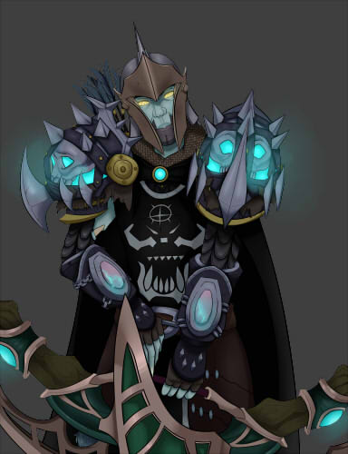
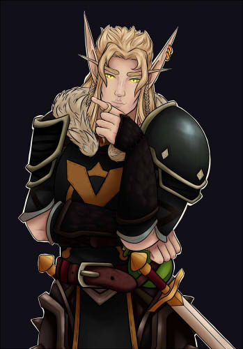
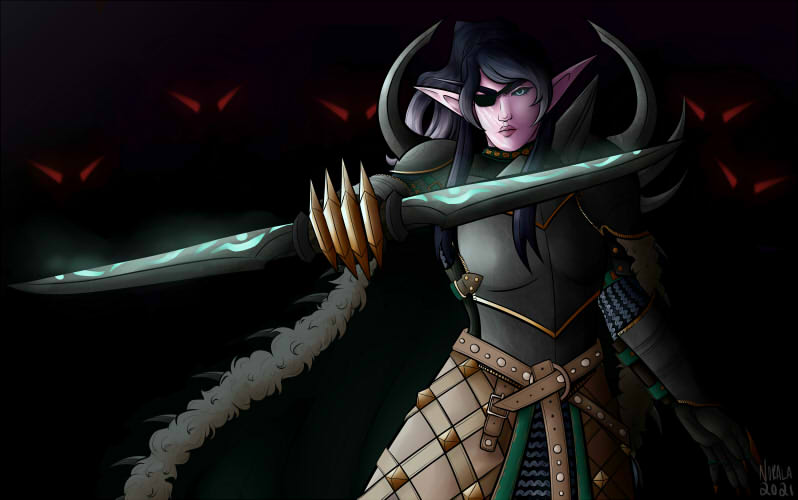

All of my friends from elementary school ended up going to a different middle school than I did
and I was artistically left to my own devices. I returned to drawing characters, and since
digital art was much easier to share than traditional (think markers, pens, paint) I would share it with the
people I played with in World of Warcraft.
While I was in high school, I realized that people were interested in commissioning me. A commission, in
the digital art space, refers to you drawing what ever a client wants in exchange for money or some other compensation.
This became my first "job", in a sense, and I could use that money to pay for my game subscription and save up for my own computer.
(My dad made sure to let me know he thought I was a sell out for doing this.)
  